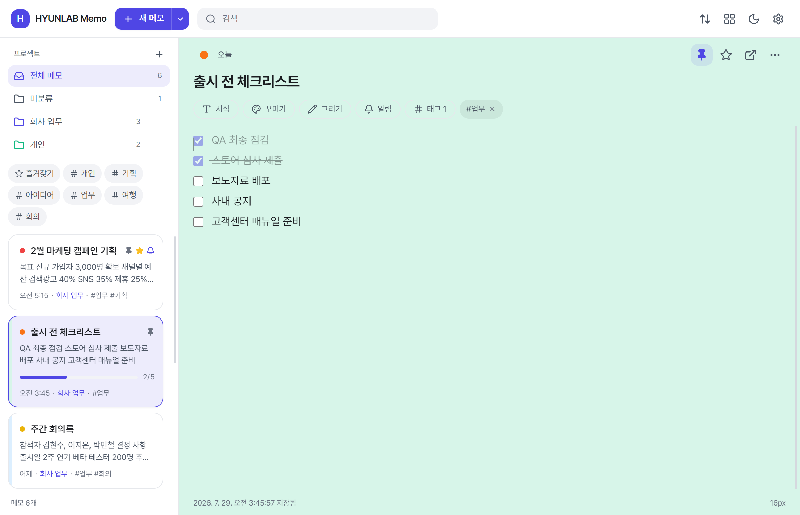
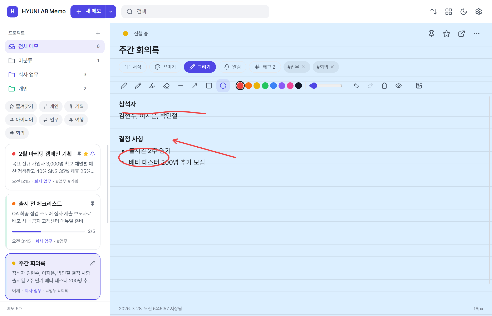
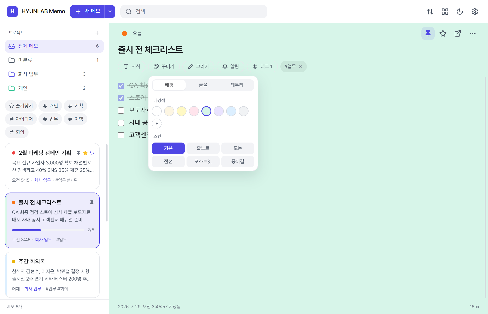
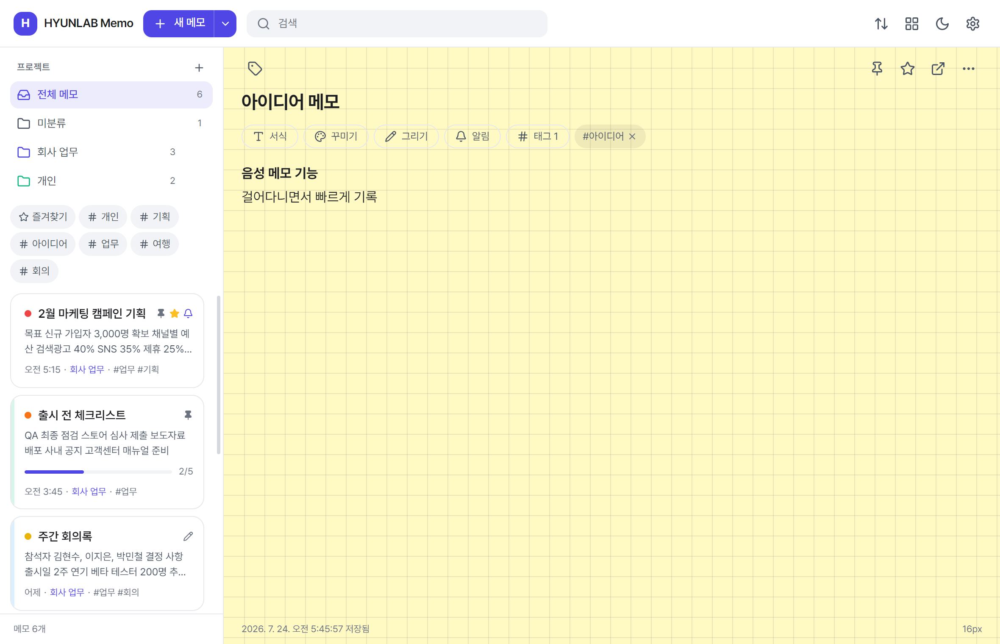

HYUNLAB Memo
필요한 순간 바로 꺼내 쓰는 메모

설치하기 전에 어떤 앱인지 미리 확인해 보세요.





Windows 스티커 메모보다 편하게, 필요한 기능만 깔끔하게.
메모를 독립된 작은 창으로 띄워 바탕화면 어디에나 붙여 두세요. 항상 위, 투명도, 잠금까지 지원합니다.
할 일을 체크하면 자동으로 취소선이 그어집니다. 장보기, 업무 목록에 딱 맞습니다.
날짜와 시간을 정하면 Windows 알림으로 알려드립니다. 매일·매주·매월 반복도 가능합니다.
크림, 연노랑, 민트, 라벤더 등 8가지 배경색과 Pretendard·SUIT 등 다양한 폰트를 고를 수 있습니다.
펜·연필·형광펜과 화살표·도형으로 글 위에 바로 표시하세요. 필기는 글과 따로 저장되어 안전합니다.
저장 버튼이 없습니다. 입력하는 즉시 저장되고, JSON으로 내보내 다른 PC로 옮길 수 있습니다.
실행하면 바로 입력할 수 있습니다. 로그인도, 광고도, 인터넷 연결도 필요 없습니다.
메모는 서버로 전송되지 않고 내 컴퓨터에만 저장됩니다. 계정을 만들 필요도 없습니다.
설치 없이 웹에서 쓰거나, 프로그램으로 설치해 더 편하게 사용하세요.
Windows 10 / 11 (64bit) · 무료
설치가 번거로우면 Portable 버전(.exe, 설치 없이 바로 실행) 도 받을 수 있습니다.
Windows에서 처음 실행하면 “Windows의 PC 보호” 경고가 나타날 수 있습니다. 이때 화면 왼쪽의 [추가 정보] 를 누른 뒤 아래에 나타나는 [실행] 을 선택하면 정상적으로 설치됩니다.
이 경고는 아직 코드 서명 인증서를 적용하지 않아 표시되는 것으로, 프로그램에 문제가 있는 것은 아닙니다. 관리자 권한도 필요하지 않습니다.